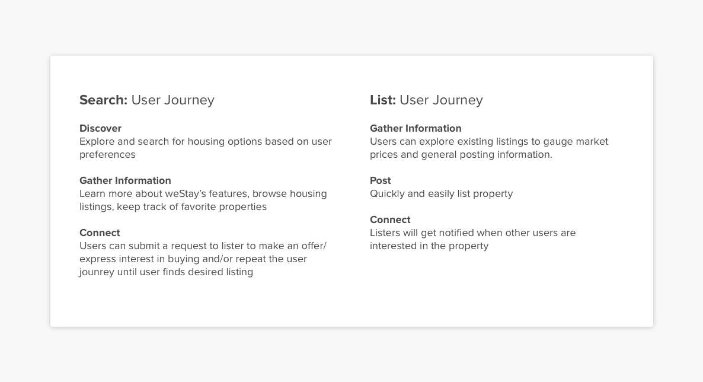
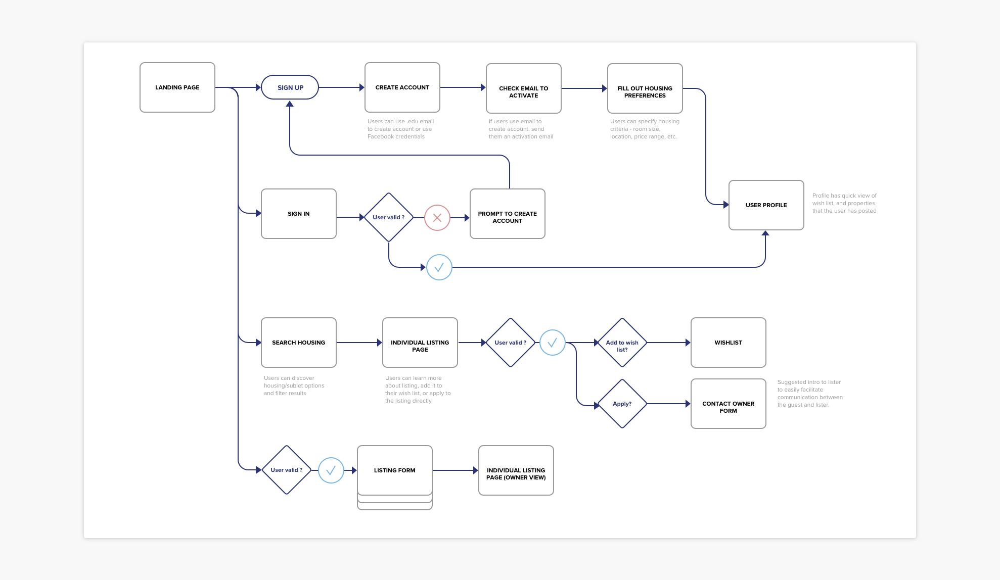
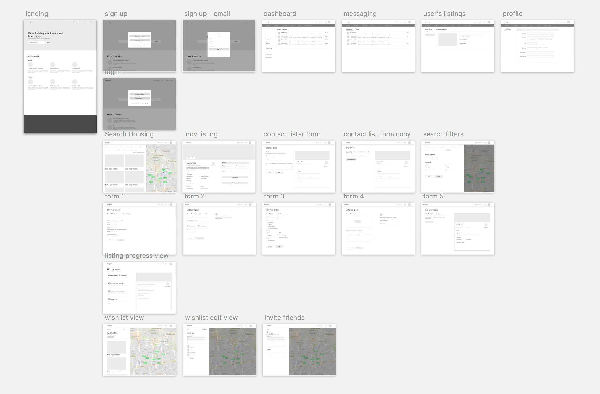
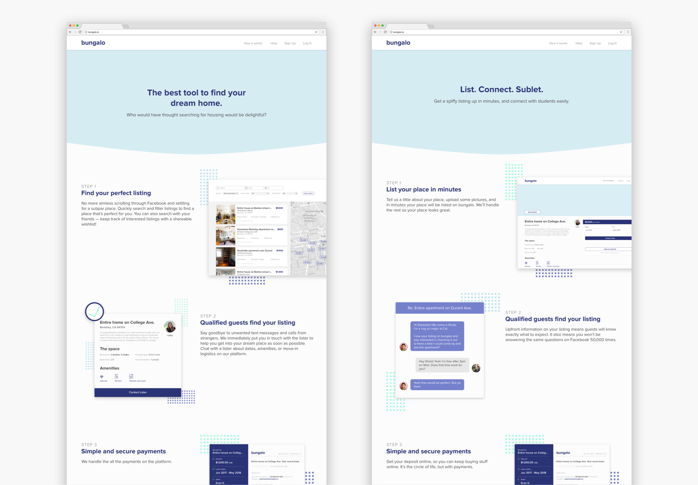
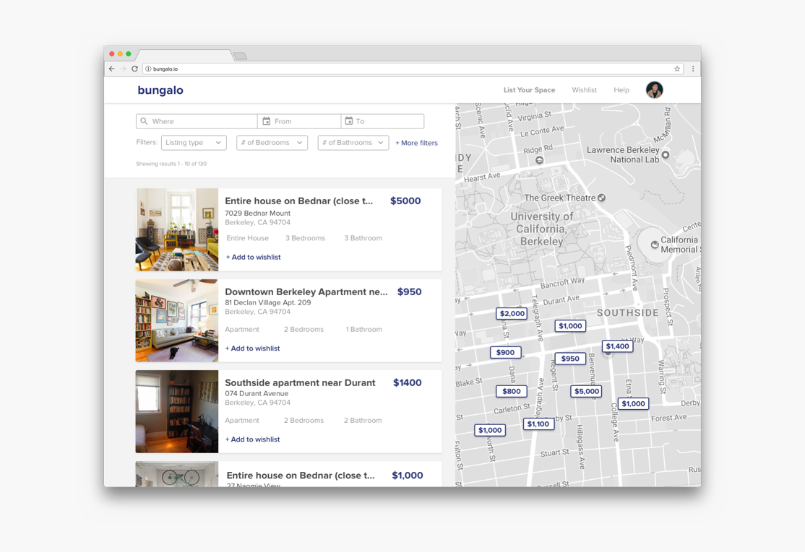
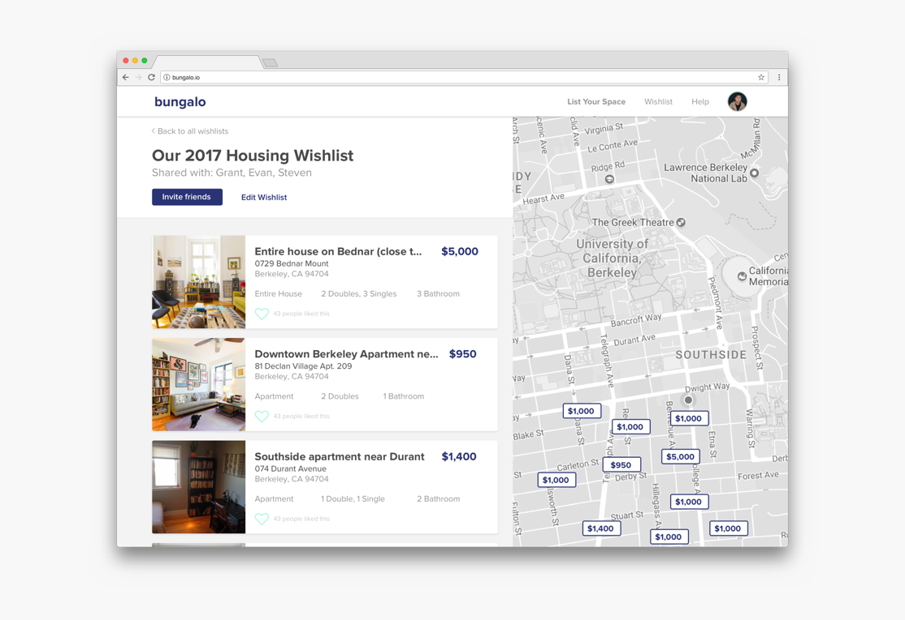
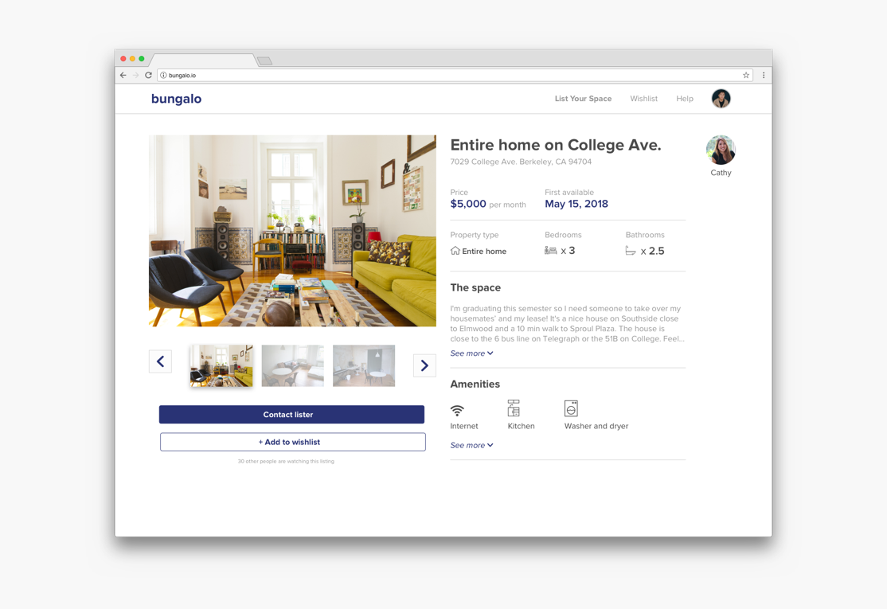
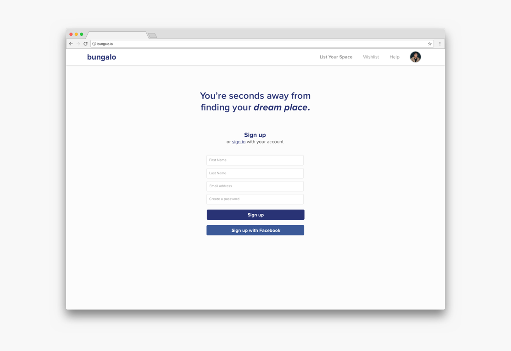

Each spring semester, the housing search brings about panic and stress amongst Cal students.
Currently, students must resort to inefficient and ineffective ways of searching for off-campus housing options, whether its renting for the school year or subletting their place during the summer.
One day at lunch, my friend, Sam Hayat, and I were venting about our frustrations with the same problem amidst exams and final project deadlines. We thought that there had to be a better solution.
From these frustrations came bungalo - a web platform with the aim of providing students with an simple and secure way to search for housing and subletters, as well as establishing trust in Berkeley’s college housing market. We are currently being incubated by Free Ventures and The House.
Sam Hayat (Co-founder, Business Lead)
Steven Truong (Frontend Engineer)
Evan Katz (Backend Engineer)
Grant Kalasky (Co-founder, Product Lead)
Each spring semester, the inevitable search for off-campus housing rolls around. Unfortunately, there's no centralized place for students to look for their home for the next academic year. Students find themselves buried under countless Facebook posts, Craiglists ads, and Zillow listings. Once people do find housing, often options that are less than ideal, many have to frantically find subletters for the summer if they will be away. The process is messy and stressful to say the least. We wanted to change this.
We wanted our solution to address two main problems:
We started by evaluating our target user demographic and began to define the product. We released a survey (which got over 150 responses within one week) and interviewed 10 friends with various housing and sublet experiences.
The survey validated some of our assumptions and also highlighted parts of the housing/sublet experience we hadn't thought about, particularly the group aspect of the housing search. This would later become a very important insight.
We hoped to initially capture college students (1) on campuses where off-campus housing was popular and (2) students with summer internships in large metropolitan areas.
After lots of discussion with our advisor and venture capitalists we pitched to, we realized our go-to-market strategy was too broad. This would lead to similar problems other start-ups were experiencing in the college-housing space.
We had to focus heavily on our execution. This brought up some important questions, ones we'd spend a lot of time thinking about and discussing.
How do we develop a two-sided marketplace? What side of the market do we address first? Supply or Demand?
Drawing from strategies used by other consumer-facing products, we decided to tackle Supply. If we established a legitimate and valuable supply of listings, users who would land on our site for the first time would be more likely to use it.
We wanted to establish a great first impression with our users.
With this strategy, we decided to address the immediate UC Berkeley market for year-round housing. This would provide us with a descent amount of listings by mid-March. With established supply, we then planned to attack the summer-internship market in the Bay Area.
Once we got market validation, I wrote specs for the platform and sketched initial wireframes for our MVP. Throughout this process, I would refer back to notes from user interviews and survey responses to ensure the product was catered to user needs.
Our MVP addressed many pain points that characterize the current search-for-housing experience:
Before jumping into designs, I put together a general user-flow to help me contextualize each screen and its relationship with the others. The user-flow focused on onboarding and 2 main user journeys: searching and listing.
 For the lo-fi wireframes of the MVP, I focused on onboarding, searching, and listing - interactions that would become the foundation for the platform. I spent more time on these wireframes than I typically would because perfecting these aspects of the MVP would be critical to the overall user experience for both use cases (listers and renters).
Soon after I put the wireframes together, I went on to design our marketing pages. Here are the "How it Works" pages for listers and guests:
Housing that Meets the User's Needs
With current housing solutions, students are forced to scroll aimlessly through Newsfeeds or scammy posts on Craigslist. Often times, users are unable to find properties that meet their criteria and instead settle with less-than-ideal properties. We wanted to provide users with a simple and quick way to input their housing preferences, find a listing that meets their needs, and contact the lister. With our platform, the time to find housing shrinks from a few weeks to minutes.
Search for Housing with Friends
Often, the housing search isn’t done alone. It’s a group effort. Currently, there’s no easy way for students to share listings with one another. Information is scattered and oftentimes lost. We wanted to provide a single place for groups to save their favorite listings, view, and vote on them. This became the Group Wishlist feature. Groups no longer have to tag each other in countless Facebook posts, or continue to send URLs in group-chats.
Clear and Concise Information - Making the Housing Decision Easier
We wanted to provide the essential information needed to decide on housing, without overloading users with useless noise. At the same time, we hoped to bring the peace-of-mind users want when making such an important decision. To do so, we only presented the most important metadata associated with a property (e.g. property-type, bedrooms, bathrooms) in a standardized format. This allowed for better scanability and increased trust. This allowed users to focus more on making the right decision, rather than worry about searching for disparate pieces of information.
A Safe and Secure Experience
When using current methods to find housing, students often ran into scammy posts and untrustworthy people. We wanted to build trust and cultivate a transparent community marketplace. To do so, we required a .edu email to post listings on the site. We also had a dedicated number of people to check the site regularly for posts that seemed suspicious.
We are currently working hard on the MVP and plan to launch in late November - I'd love to chat more about bungalo in person or over the phone!